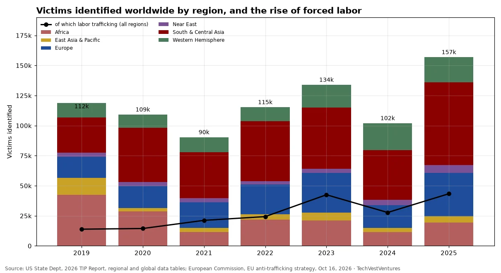

Q8. Victims by Region
Weekly Focus graphs: new charts are added each week from primary data. Each caption names its sources; numbers are not copied from third-party chart images.

Governments identified a record 156,912 trafficking victims in 2025 (2026 TIP Report), up 54% on 2024 and 40% on 2019. South & Central Asia (68,787) and Europe (36,109, nearly double 2024) drove the increase. Labor trafficking victims rose from 13,875 (12% of the total) in 2019 to 43,342 (28%) in 2025. Caution: these are victims identified by authorities, not prevalence; a jump can mean better screening as much as more crime. The EU's Oct 16, 2026 strategy separately reports 20,000+ registered victims in 2023-24 (+16.1% vs 2021-22).
Sources: US State Dept, 2026 TIP Report, regional and global data tables European Commission, EU anti-trafficking strategy, Oct 16, 2026